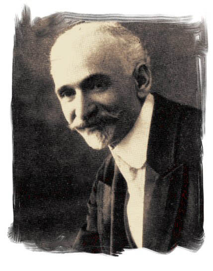
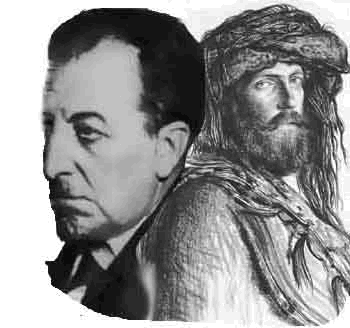
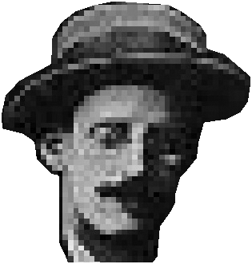

пускай с моею мордою
печатных книжек нет,
вот эта подпись гордая
есть мой автопортрет
великие творения
былого
:авторский сайт графомана
рукописи не горят!.. ...в интернете ...
Ованес Туманян (1869-1923)

Сделал для восточно-армянской литературы примерно то, что Пушкин для русской – поднял ее на мировой уровень современной ему эпохи.
Стихи О. Туманяна милы и полнозвучны, но его «фирменное блюдо» – сказки, которые умел сплетать мастерски, со смаком, а может просто воссоздавал слышанное в детстве от мужичьих менестрелей-балагуров.
Хоть так, хоть эдак – честь ему и хвала, а поскольку вытребеньки простого люда сподручней передавать украинским языком – он и выбран для перевода сказки Туманяна.
Аветик Исаакян (1875 - 1957)

В прозу не совался, вероятно, прикинувши, что так целее будет в развороченном бурей мире.
В литературном плане сопоставим с Туманяном так же, как Лермонтов с Пушкиным.
Армянские корифеи—в отличие от российских—водили личное знакомство.
Заглавное стихотворное произведение творчества Аветика Исаакяна—поэма "Абу-аль-Ала Маари"—здесь тоже представлено на украинском языке, поскольку на русском имеется подстрочник вытуженый В. Брюсовым в 1916 г.
Джеймс Джойс (1882 - вечность)

Полуслепой ирландец, через которого были
выдохнуты в мир
умовосхищающие логососплетения
и мозаичная
калейдо-круго-скопо-верть
облако-переменчивых переливов идей и образов
романа УЛИС –
библии для третьего тысячелетия.
Наличие русско-язычной попытки перевода УЛИСА конца ХХ-го столетия не побудило переводчика и на этот раз работать на украинском – значимость романа обязывает адресоваться к наивозможно более широкому кругу читателей.